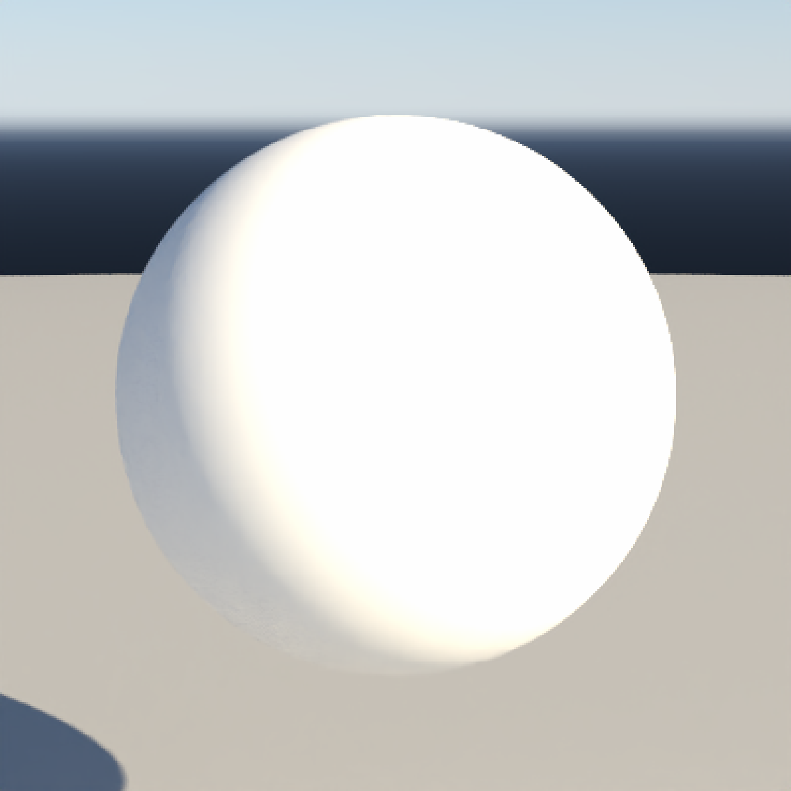
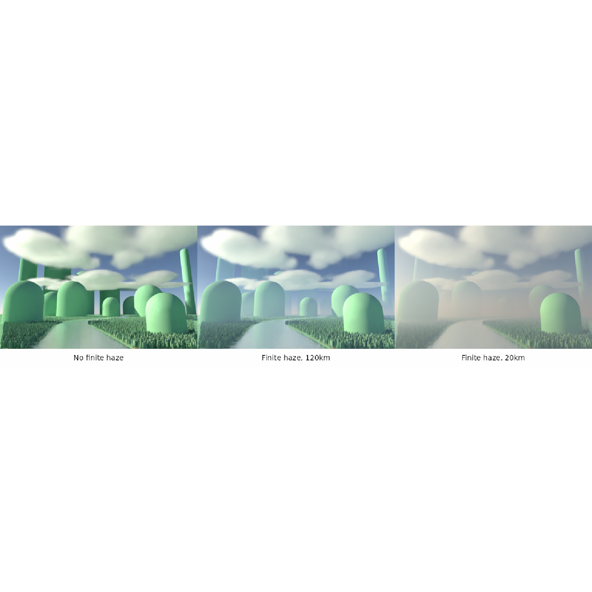
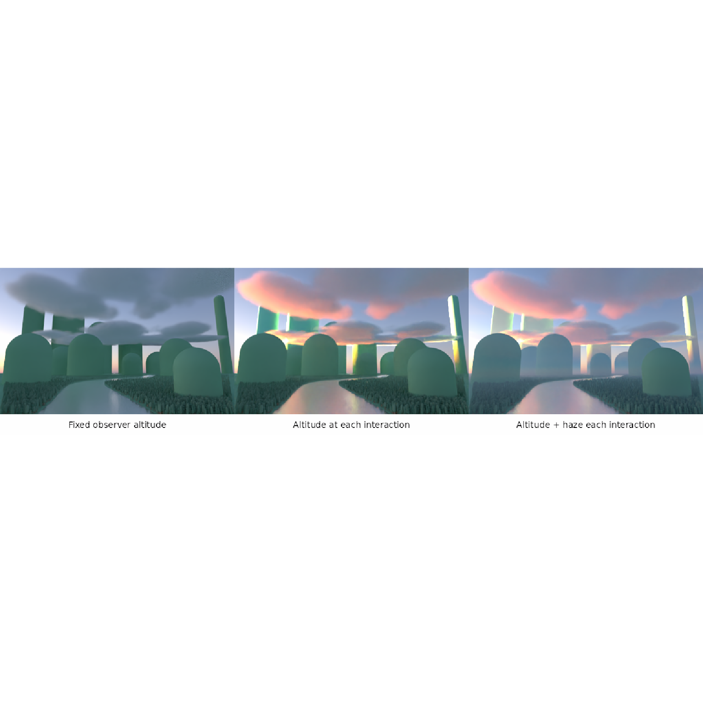

Evaluate the native Prague atmosphere at scene interactions, including
altitude-dependent Sun and sky lighting, finite-distance haze, and
in-scattering. Supply location and time, or direct Sun elevation and azimuth.
Location/time skies include Sun and Moon disk lights automatically.
Add the light with add_infinite_light(). Rendering automatically selects
integrator_type = "nee". Use sky_light_image() for a cached sky image.
sky_light(
lat = NULL,
long = NULL,
datetime = NULL,
intensity = 1,
rotation = 0,
name = "sky",
meters_per_unit = 1,
atmosphere_origin = c(0, 0, 0),
haze = TRUE,
query_altitude = TRUE,
haze_in_volumes = FALSE,
deferred_haze = TRUE,
cache_spectra = TRUE,
transmission_table = TRUE,
transmission_table_max_mb = 512,
altitude = 0,
visibility = 131.8,
albedo = 0.5,
sampling_resolution = 64,
render_mode = "all",
prague_rgb_correction = TRUE,
prague_rgb_correction_strength = 1,
prague_rgb_correction_gain = "auto",
sun = TRUE,
moon = TRUE,
sun_resolution = 256,
moon_resolution = 256,
earthshine = TRUE,
earthshine_albedo = 0.19,
solar_irradiance_w_m2 = 1300,
stars = FALSE,
star_width = 1,
stars_exposure = 0,
planets = FALSE,
celestial_resolution = 2048,
number_cores = 1,
haze_filter = TRUE,
elevation = NULL,
azimuth = NULL
)Default NULL. Latitude in degrees, between -90 and 90. Supply
lat, long, and datetime together, or use elevation and azimuth.
Default NULL. Longitude in degrees, between -180 and 180.
Default NULL. A single POSIXct date and time. Specify its time zone when
constructing it with as.POSIXct().
Default 1. Nonnegative multiplier for this light's radiance.
Default 0. Additional rotation in degrees around the world
Y axis, using the same convention as infinite_light().
Default "sky". Unique light name within the scene.
Default 1. Physical meters per world-space unit.
Applies to distances along every axis.
Default c(0, 0, 0). World-space location of the
geographic reference point, at altitude meters above sea level.
World +Y is up; horizontal offsets follow the model's spherical Earth.
Default TRUE. Include finite-distance haze and
in-scattering between scene interactions.
Set FALSE to evaluate native Prague lighting without this finite-distance
haze. Sun/sky radiance and celestial disk filtering still include the
atmosphere between the query location and space.
Default TRUE. Query lighting at each surface, cloud,
or camera position, using meters_per_unit and
atmosphere_origin. Set FALSE with haze = FALSE to evaluate all
lighting at the fixed reference point and altitude. Finite-distance
haze requires position-dependent queries, so haze = TRUE requires
query_altitude = TRUE.
Default FALSE. Integrate clear-air haze inside attached
volume materials as well as outside,
except in regions excluded by a medium's haze and haze_density_threshold settings.
Set FALSE to pause finite haze while a ray is inside any volume boundary,
resuming at its exit. This applies to camera paths, shadow connections, and
background opacity. The entire enclosed volume is excluded, including empty
cells; the volume's own scattering, absorption, and emission remain active.
Default TRUE. Defer haze queries between interactions
and estimate changes in transport
weights using one reservoir sample. This reduces model queries while preserving
the estimator's mean, with additional Monte Carlo noise. Extinction is applied
at each completed span; emitting medium events also end a span. Works with
either haze_in_volumes setting. Set FALSE to evaluate every haze interval.
Signed corrections are averaged before display processing. Keep
render_scene(clamp_value = Inf) to avoid clipping that estimator.
Default TRUE. Reuse exactly matching Prague sky spectra
in a small cache per rendering thread. This changes
neither the model nor individual samples. Set FALSE to disable this cache.
Default TRUE. Precompute transmission
reconstruction at Prague's existing grid points, preserving its
interpolation and individual sample results. Adds about 128 MiB per model at
50 km visibility, shared across threads. Tables exceeding
transmission_table_max_mb, allocation failures, and queries outside the
cached visibility slices use the original compressed evaluator. Set FALSE
to retain that evaluator for all queries.
Default 512. Maximum additional memory per
model for the transmission table, in MiB (1024^2 bytes), shared across threads.
Accepts nonnegative numbers, including fractional values. Set 0 to disable
table allocation or Inf to remove the cap. If the complete table does not
fit, use the original exact evaluator. Applies when transmission_table = TRUE.
Default 0. Reference altitude in meters above sea level,
at atmosphere_origin. Prague supports 0–15000 m.
Default 131.8. Prague meteorological visibility in kilometers,
from 20 to 131.8. Smaller values produce stronger haze.
Default 0.5. Uniform ground reflectance for the sky model,
between 0 and 1. Local surface materials are specified separately.
Default 64. Height of directional importance-sampling
tables, from 16 to 2048. This does not limit the rendered sky's detail.
Default "all". Select sky and Sun ("all"), sky without
the solar disk ("atmosphere"), or the solar disk alone ("sun").
Moon, star, and planet switches are independent of this selection.
Default TRUE. Apply skymodelr's Prague RGB
tint correction.
Default 1. Strength of the Prague RGB
tint correction. Must be finite and nonnegative: 0 disables correction,
and 1 applies the full calibrated correction.
Default "auto". Calibrated Prague RGB
gains, or a numeric vector of three finite, positive linear RGB multipliers.
Default TRUE. Include an independently sampled Sun disk when
selected by render_mode. Set FALSE to omit direct sunlight and the visible
disk; solar sky radiance and haze remain. A separate sun_light() overrides
the automatic Sun.
Default TRUE for location/time skies, FALSE for direct skies. Include an independently sampled Moon disk with
its phase and earthshine for this location and time. A separate moon_light()
overrides the automatic Moon. Set FALSE to omit the automatic disk.
Default 256. Sun disk texture width and height in
pixels, at least 16; independent of the atmospheric sampling_resolution.
Default 256. Moon disk texture width and height in
pixels, at least 16. Cropping and edge coverage can change the final dimensions.
Default TRUE. Illuminate the Moon's dark side with earthshine.
Default 0.19. Effective Earth reflectance used to
calculate earthshine.
Default 1300. Reference solar irradiance at
1 AU, in W/m^2, used to normalize earthshine.
Default FALSE. Include a star field, filtered by the native
atmosphere at each interaction.
Default 1. Star and planet point-spread width in pixels
in the celestial background image.
Default 0. Exposure adjustment for stars only, in stops.
Default FALSE. Include bright planets, filtered by the native
atmosphere at each interaction.
Default 2048. Height of the star/planet background
image; its width is twice this value. Independent of the atmospheric sampling
and Sun/Moon texture resolutions. Used only when stars or planets is enabled.
Default 1. CPU threads used to prepare celestial textures.
Default TRUE. Reduce finite-haze bands by averaging complete
nearby atmospheric paths with a 0.5-degree vertical Gaussian, truncated at
plus or minus 1.5 degrees. Each path uses Prague's sky spectra and its own
endpoint and transmission; paths entering Earth are excluded. This changes
finite in-scattering, while retaining the sky, celestial lights, and the
actual ray's transmission. Existing haze is retained within 3 degrees of the
Sun, with a smooth transition to filtering at 6 degrees. Set FALSE to use
the endpoint-smoothing calculation. Each filtered haze query samples
one of 129 weighted directions, preserving the full filter's mean with
additional Monte Carlo noise. This sampling applies with either value of
deferred_haze.
Default NULL. Direct solar elevation in degrees, from -90
to 90. Supply with azimuth instead of location and time. Prague sky radiance
is supported down to -4.2 degrees; Hosek image skies require elevation >= 0.
Default NULL. Direct solar azimuth in degrees, from 0
(north) clockwise through 90 (east), less than 360. Direct skies omit the
Moon by default and cannot include Moon, stars, or planets without an ephemeris.
A ray_infinite_light containing a native atmospheric sky description.
Install the full-altitude Prague data with
skymodelr::download_sky_data(sea_level = FALSE) before rendering.
Pkgdown builds download missing datasets automatically; ordinary renders
require an explicit download.
Atmospheric queries share skymodelr's coefficients and registered native API.
With query_altitude = TRUE, the sky and Sun elevation change with the altitude of
each surface or cloud interaction. With haze = FALSE, finite haze
is disabled while this local lighting remains active. Setting both
haze = FALSE and query_altitude = FALSE uses the fixed reference
observer for all lighting. Date and time stay fixed during an animation.
World +Y is up. With zero rotation, north is world +Z and east is world -X.
meters_per_unit sets the physical scene scale, and atmosphere_origin
locates the geographic reference point at altitude meters above sea level.
Horizontal offsets follow the model's spherical Earth. The Sun is sampled
independently of the sky sampling resolution. Its visibility includes Earth's
curvature, allowing elevated clouds to receive sunlight on their undersides
after the Sun disappears from the ground. Refraction is not modeled.
Ground surfaces can still receive diffuse twilight and indirect cloud light.
A scene can contain one atmospheric sky. When the reference Sun elevation is
below -4.2 degrees, Prague contributes black sky and no solar in-scattering.
Enabled Moon, star, and planet lights still contribute, with atmospheric
transmission and Earth occlusion applied normally. Queries outside 0–15000 m
use the nearest modeled altitude; keep scene interactions within that range.
Do not add another medium
modeling the same clear-air scattering or absorption. Separate clouds can be
added normally. Clouds default to no interior haze; cloud(haze = TRUE)
enables haze below density 0.05, and haze_density_threshold = NULL removes
that cutoff. See cloud() for details.
The model precomputes clear-air multiple scattering over a spherical Earth with uniform ground albedo. Local geometry and clouds block direct Sun and sky lighting but do not cast shadows into this precomputed in-scattering. Haze is disabled inside dielectric solids. Radiance is integrated spectrally and converted to renderer RGB; haze of RGB materials uses a broadband approximation. Finite-distance fitted transmission is normalized at zero distance and interpolated in optical depth over the first 100 m. Ray-anchored cumulative transport avoids accumulating fit errors at cloud null events. Finite haze is filtered over complete neighboring paths by default to reduce bands from subtracting independently fitted sky spectra. This is an angular regularization of the finite source. It does not blur the environment image or surface geometry.
Direct-angle skies use the native Prague solar disk with a fixed angular
diameter of 0.533 degrees. They retain altitude-dependent lighting and haze.
For location/time skies, Sun and Moon are prepared using sun_light() and moon_light()
with this sky's location, time, altitude, rotation, intensity, and color settings.
Disk textures are generated without atmospheric filtering or a fixed horizon
mask, then cached. The renderer applies spectral atmospheric filtering and
Earth occlusion at each interaction. Disabling finite haze does not disable
this filtering. Separate Sun or Moon lights replace the matching automatic
disk, preserving their own settings. Removing or replacing the sky also
removes or replaces its automatic celestial components.
Stars and planets use cached, unattenuated images of the full sphere, with native RGB atmospheric filtering and Earth occlusion at each interaction. Their map resolution affects point-source detail, not the Prague atmosphere.
Other infinite lights add to the sky. Additional image lights represent
radiance outside the atmosphere and receive atmospheric haze; do not
use an image that already includes the same haze. sun_light() and
moon_light() request unattenuated textures automatically. The renderer
applies spectral atmospheric filtering and Earth occlusion at each interaction.
The sampled Sun replaces the built-in solar disk while preserving the sky and
haze. Without an explicit disk altitude, ephemerides use this sky's reference
altitude. Match light rotations and intensities when they should describe
the same illumination. The precomputed haze remains Sun-driven: a Moon disk
lights surfaces and clouds but adds no moonlit in-scattering or lunar halo.
Image-only model choices such as hosek and moon_atmosphere belong to
sky_light_image().
Use render_scene()'s iso to adjust exposure, keeping it fixed within each
comparison. With a transparent background, atmospheric in-scattering remains
foreground radiance and scalar opacity comes from primary-ray transmission.
RGB transmission into an arbitrary compositing background is approximate.
The standalone vignette vignette("sky-light", package = "rayrender")
builds the full capsule landscape, river, question blocks, pipes, and clouds,
and demonstrates image skies, celestial lights, and additional sky controls.
# Install the full-altitude Prague data once before rendering:
# skymodelr::download_sky_data(sea_level = FALSE)
# Place the Sun directly, without specifying a location or date.
generate_ground() |>
add_object(sphere(y = 1)) |>
add_infinite_light(sky_light(elevation = 25, azimuth = 135)) |>
render_scene(lookfrom = c(0, 2, -8), lookat = c(0, 1, 0),
aperture = 0, samples = 32, iso = 5)

if (
requireNamespace("ambient", quietly = TRUE) &&
requireNamespace("tree3d", quietly = TRUE)
) {
# Scene units are kilometres.
# Rounded green hills, with their lower capsule ends buried in the ground.
# The rows are roughly 3-7, 17-26, and 60-85 km from the camera.
# Small foreground hills stay crisp while larger distant hills fade.
hills = data.frame(
x = c(-1.1, 3, -6, -2, 3.5, 8, -27, -17, -6, 7, 22, 35, -45),
z = c(-5.6, -2.2, 9, 15, 11, 17, 55, 63, 69, 58, 66, 60, 62),
radius = c(0.30, 0.72, 1.7, 1.4, 2, 2.2, 6, 5, 5.5, 5, 7, 4, 2),
top = c(0.7, 1.7, 3.8, 3, 4.7, 4.2, 10, 9, 22, 20.5, 31, 30, 34)
)
terrain_mat = diffuse(color = "#469D60")
terrain = xz_rect(xwidth = 160, zwidth = 160, material = terrain_mat)
for (i in seq_len(nrow(hills))) {
h = hills[i, ]
terrain = add_object(
terrain,
csg_object(
csg_capsule(
start = c(h$x, -h$radius, h$z),
end = c(h$x, h$top - h$radius, h$z),
radius = h$radius
),
material = terrain_mat
)
)
}
# A river winds around the capsule footprints and turns out of sight behind
# the distant pair at (-6, 69) and (7, 58). Coordinates and width are in km.
# fmt: skip
river_bends = data.frame(
x = c(0.3, 0.1, 0.7, 0.8, -1.2, -2.6, -3.9, -4.2, 0.2, 2.5, -1.1, 0.7, 1.4, 1.1, -2, -4.5),
z = c(-12, -7, -4, -1, 3, 7, 12, 17, 23, 32, 43, 53, 62, 69, 76, 79)
)
river_curve = stats::splinefun(
river_bends$z,
river_bends$x,
method = "natural"
)
river_z = seq(min(river_bends$z), max(river_bends$z), length.out = 600)
river_center = cbind(x = river_curve(river_z), z = river_z)
# Offset perpendicular to the tangent, keeping the river 1 km wide even
# through bends. Reverse the second bank to make one closed polygon.
river_width = 1
river_slope = river_curve(river_z, deriv = 1)
bank_offset = river_width /
2 *
cbind(1, -river_slope) /
sqrt(1 + river_slope^2)
river_banks = rbind(
river_center + bank_offset,
(river_center - bank_offset)[length(river_z):1, ]
)
# Keep the polygon's world x coordinates and lift its top 1 m above
# ground. A thin extrusion gives the river an upward-facing surface.
terrain = add_object(
terrain,
extruded_polygon(
river_banks,
plane = "xz",
top = 0.001,
bottom = -0.001,
flip_horizontal = TRUE,
material = microfacet(color="#168BC4",transmission=TRUE, roughness=0.2)
)
)
# Redwood-sized trees: 60-100 m tall, in a scene measured in kilometres.
# Generate three solid tree meshes once, then share them across 20,000 instances.
# Crown widths are 12-25 m and trunk diameters are approximately 2.4-5 m.
tree_types = c("pyramidal1", "pyramidal2", "columnar")
tree_colors = c("#245638", "#2B603E", "#305A3B")
tree_models = lapply(seq_along(tree_types), function(i) {
tree3d::tree_mesh(
crown_type = tree_types[i],
solid = TRUE,
resolution = "medium",
tree_height = 0.08,
trunk_height_ratio = c(0.25, 0.3, 0.35)[i],
crown_width = c(0.018, 0.016, 0.020)[i],
trunk_width = c(0.0032, 0.0036, 0.0040)[i],
crown_color = tree_colors[i],
trunk_color = "#794A35",
ambient_intensity = 0
) |>
raymesh_model()
})
# Log-spaced distances give the foreground enough trees to establish scale.
# Candidate positions follow the camera's view across the flat valley floor.
tree_count = 20000
tree_candidates = 4 * tree_count
set.seed(2028)
tree_distance = exp(runif(tree_candidates, log(1.4), log(85)))
tree_positions = data.frame(
x = runif(tree_candidates, -0.65, 0.65) * tree_distance,
z = -8 + tree_distance,
size = runif(tree_candidates, 0.75, 1.25),
angle = runif(tree_candidates, 0, 360),
model = sample(seq_along(tree_models), tree_candidates, replace = TRUE)
)
# Leave enough room for the widest crown along both riverbanks and hills.
# Measure distance to river segments so the exclusion follows every bend.
tree_clearance = 0.015
tree_clear = rep(TRUE, nrow(tree_positions))
for (i in seq_len(nrow(river_center) - 1)) {
dx = river_center[i + 1, 1] - river_center[i, 1]
dz = river_center[i + 1, 2] - river_center[i, 2]
along = pmin(
pmax(
((tree_positions$x - river_center[i, 1]) *
dx +
(tree_positions$z - river_center[i, 2]) * dz) /
(dx^2 + dz^2),
0
),
1
)
river_dx = tree_positions$x - (river_center[i, 1] + along * dx)
river_dz = tree_positions$z - (river_center[i, 2] + along * dz)
tree_clear = tree_clear &
river_dx^2 + river_dz^2 > (river_width / 2 + tree_clearance)^2
}
for (i in seq_len(nrow(hills))) {
tree_clear = tree_clear &
(tree_positions$x - hills$x[i])^2 +
(tree_positions$z - hills$z[i])^2 >
(hills$radius[i] + tree_clearance)^2
}
tree_positions = head(tree_positions[tree_clear, ], tree_count)
# Each group shares one mesh/BVH. Vary height and yaw without copying geometry.
for (i in seq_along(tree_models)) {
grove = tree_positions[tree_positions$model == i, ]
terrain = add_object(
terrain,
create_instances(
tree_models[[i]],
x = grove$x,
z = grove$z,
angle_y = grove$angle,
scale_x = grove$size,
scale_y = grove$size,
scale_z = grove$size
)
)
}
# Billowing Perlin volumes sit above each row of hills. Optical depth sets
# the cloud's own scattering; sky_light() separately supplies clear-air haze.
cloud_rows = data.frame(
z = c(3, 21, 63),
base = c(5, 6, 12.5),
width = c(16, 32, 90),
depth = c(10, 16, 24)
)
landscape = terrain
for (i in seq_len(nrow(cloud_rows))) {
cl = cloud_rows[i, ]
landscape = add_object(
landscape,
cloud(
z = cl$z,
y = cl$base + 1.8 / 2,
width = cl$width,
depth = cl$depth,
height = 1.8,
resolution = 64,
coverage = 0.4,
detail = 0.4,
optical_depth = 4,
g = 0.65,
seed = 41 + i
)
)
}
day = as.POSIXct("2026-06-21 18:00:00", tz = "America/New_York")
sunset = as.POSIXct("2026-06-21 20:35:00", tz = "America/New_York")
render_sky = function(light, iso = 4, caption = "") {
set.seed(2026)
image = landscape |>
add_infinite_light(light) |>
render_scene(
lookfrom = c(0, 0.35, -8),
lookat = c(0, 2.4, 3),
fov = 47,
aperture = 0,
width = 384,
height = 240,
samples = 32,
integrator_type = "nee",
iso = iso,
tonemap = "raw",
plot_scene = FALSE
)
rayimage::render_stack(list(
image,
rayimage::render_text_image(
caption,
size = 14,
font = "sans",
width = dim(image)[2],
height = 34,
just = "center",
check_text_width = FALSE,
check_text_height = FALSE
)
))
}
# Haze changes contrast and color with distance. Hold visibility and ISO fixed.
rayimage::plot_image_grid(
list(
render_sky(
sky_light(
40.7,
-74,
day,
meters_per_unit = 1000,
haze = FALSE
),
caption = "No finite haze"
),
render_sky(
sky_light(40.7, -74, day, meters_per_unit = 1000, visibility = 120),
caption = "Finite haze, 120km"
),
render_sky(
sky_light(40.7, -74, day, meters_per_unit = 1000, visibility = 20),
caption = "Finite haze, 20km"
)
),
dim = c(1, 3)
)
# Isolate altitude-dependent lighting by disabling finite haze in both images.
# The Sun is below the ground horizon, but the elevated cloud can still see it.
rayimage::plot_image_grid(
list(
render_sky(
sky_light(
40.7,
-74,
sunset,
meters_per_unit = 1000,
haze = FALSE,
query_altitude = FALSE
),
iso = 175,
caption = "Fixed observer altitude"
),
render_sky(
sky_light(
40.7,
-74,
sunset,
meters_per_unit = 1000,
haze = FALSE,
query_altitude = TRUE
),
iso = 175,
caption = "Altitude at each interaction"
),
render_sky(
sky_light(
40.7,
-74,
sunset,
meters_per_unit = 1000,
haze = TRUE,
query_altitude = TRUE
),
iso = 175,
caption = "Altitude + haze each interaction"
)
),
dim = c(1, 3)
)
}

